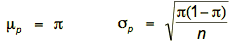
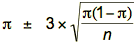
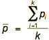
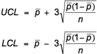

Attributes and defects
The final control chart to be considered is called a p-chart and is used to monitor the proportion of process output that has a certain attribute (p-charts are an example of what are known as attribute control charts). In practice the most common attribute to be monitored is defective status – for example an auditing process might use a p-chart to ensure that that the proportion of invoices with errors stays in control, and a manufacturer might use one to ensure that the proportion of products with faulty shrink wrapping stays in control.
Recall that if a dataset consists of x “successes” (in this case a defective represents a “success”) from a sample of size n, then the sample proportion p is p = x/n and that p has mean and standard deviation given by

where π is the population proportion.
Control limits
As in other control charts, the upper and lower control limits are defined to be
(mean measurement) ± 3 × sd (measurement)
When the sample measurement is a proportion (often of defectives), these limits are

Since π is unknown, we again assume a training period in which the process is in control and π can be estimated. If defective proportions p1, p2, …, pk are observed in successive samples of size n in this training period, our best estimate of π is the average proportion in the k samples,

The control limits for a p-chart are therefore given by

These control limits are then used in a control chart for the proportion of defectives in future samples.
Incorrectly processed book orders
An online bookseller employs extra staff to fill and despatch orders over the Christmas period. In order to monitor the proportion of orders that are processed incorrectly, he firstly takes ten random samples of 20 orders which were processed in the weeks before the Christmas period, and calculates the proportion of each sample that were processed incorrectly. He finds that the average proportion across the ten samples equals 0.04 or 4%. Therefore the two control limits are given by

Since a proportion must always lie between 0 and 1, this means that the lower control limit is effectively equal to 0.
Now suppose that the first eight samples of 20 orders taken after the start of the Christmas period produce the following numbers of defectives: 1, 0, 2, 1, 0, 2, 4, 2.
The p-chart for these samples is shown below.

On day 7 the proportion of defectives equals 4/20 or 0.2 which exceeds the upper control limit. This indicates that the process is out of control and should be investigated for special causes – possibly new temporary staff started work that day, or orders increased to the point where current staff made more mistakes under the increased workload.